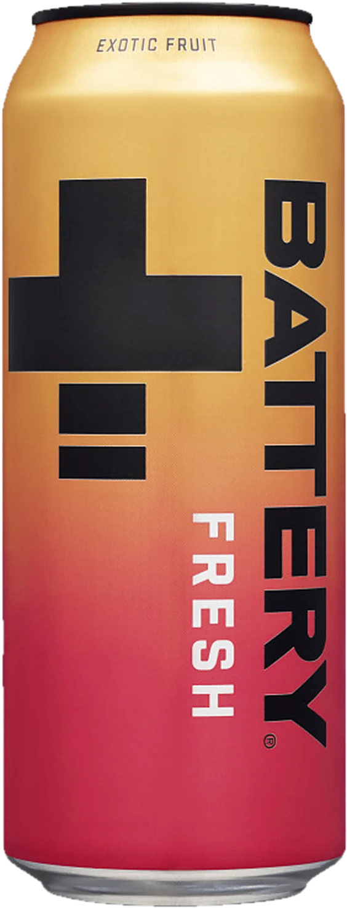

Det er tid for
Batteribytte!
Er du klar?
Hold Ja inne og lad selv – eller trykk og se på
Fullt ladet!
Batteriet er byttet. Skål!
Lavt batteri…
Helt greit. Vi venter til du er klar.

Det er tid for
Hold Ja inne og lad selv – eller trykk og se på
Batteriet er byttet. Skål!
Helt greit. Vi venter til du er klar.